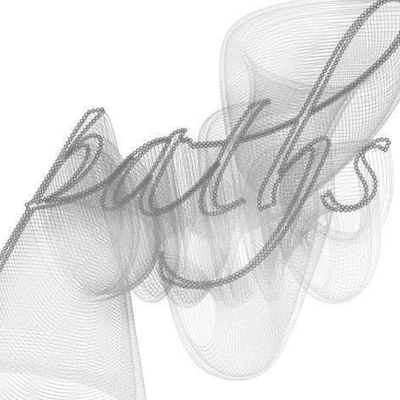

Bezier
Description
The Bezier library (nicknamed PathMatics) provides powerful mathematical functionality for Bezier paths, from simple things like evaluating the length of a path to complicated things like inserting points on a path or constructing a smooth path from a list of on-curve points. Bezier math is not the easiest thing to grasp, but all the commands in this library are simple and straightforward, and they work magic on a textpath().
Note that the Bezier library is always in development, so you might experience occasional errors while working with it. Please report any errors (tom-at-organisms-dot-be).
A special thanks goes to professor F. De Smedt at the Free University of Brussels for his integration and interpolation algorithms.
If you have NodeBox 1.8.4 or up, the library is integrated by default. See the tutorial.
Download
 | bezier.zip (5KB) Last updated for NodeBox 1.8.2 Author: Tom De Smedt |
Commands in the Bezier library
Example
A basic example of path math: the point() command tells us where to put circles on the textpath, playing around with curves and their control handles constructs the whirly background.
